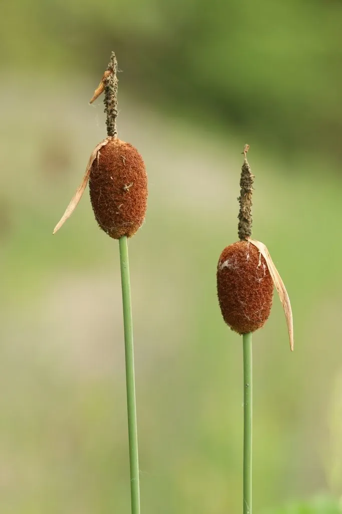

水生植物 · 植物界
小香蒲 Typha minima

香蒲科香蒲属小型多年生挺水草本，株高不足 1 米，花序小巧如蜡烛，生于沼泽浅水，是水景前景的优良植物。
- 分类
- 门被子植物门纲单子叶植物纲目禾本目科香蒲科属香蒲属
- 栖息环境
- 北方沼泽、池塘和河岸的浅水区
- 地理分布
- 欧亚大陆北部，中国北方及西南地区有分布
- 保护级别
- 暂无评估
物种志
小香蒲为香蒲科香蒲属的多年生挺水草本，株高 0.3–0.8 米，根状茎细长。叶片线形，长 30–60 厘米，宽 2–3 毫米，柔软。花序为穗状花序，顶生，雄花序在上、雌花序在下，雌花序圆柱形、深褐色，长 2–5 厘米，小巧如蜡烛，花期 5–7 月；果实为小坚果。
小香蒲分布于欧亚大陆北部的沼泽、池塘和河岸，中国北方及西南地区有分布，喜阳光充足、凉爽湿润和浅水环境，适宜水深 10–30 厘米，耐寒性强。它株型矮小、花序小巧，适合作为水景的前景植物，也可盆栽观赏。栽培以根状茎分株繁殖为主，生长期间保持浅水，冬季剪除枯叶；在园林水景中可丛植于池边或浅水区。
形态与习性
- 株高0.3–0.8 米
- 叶片线形，长 30–60 厘米
- 花期5–7 月，雌花序长 2–5 厘米
- 水深适宜水深 10–30 厘米
- 光照喜充足阳光
- 土壤富含腐殖质的湿地泥
- 繁殖根状茎分株
- 主要用途水景前景、盆栽观赏
趣味知识
- 小香蒲株高不足 1 米，是香蒲属中体型最小的种类之一。
- 它的花序只有几厘米长，小巧如蜡烛，适合做水景前景。
- 小香蒲耐寒性强，在北方湿地能自然越冬。